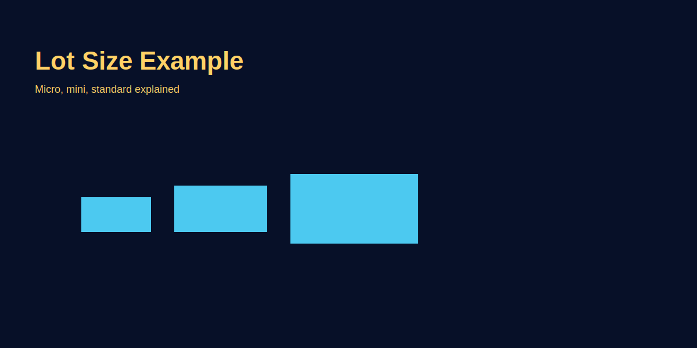

What Is a Lot Size
Problem-based introduction
Lot size ka matlab samajhna zaroori hai warna position value galat nikal sakti hai. Beginners aksar confuse ho jate hain micro/mini/standard lots ke beech. Is article mein simple Hinglish examples aur GOLD (XAU/USD) se position-value calculations dikhayenge.
Step-by-step explanation
- Standard lot: Traditionally 100,000 units of base currency (applies to currency pairs; for XAU/USD brokers may quote contract size differently).
- Mini & Micro: Mini = 10,000, Micro = 1,000 units. Many brokers offer CFDs and smaller contract sizes for GOLD (e.g., 1 oz contract or fractional lots).
- Pip/pip value: Calculate pip value per lot to determine monetary risk for a stop-loss size.
Real trading logic (GOLD example)
Example: If broker's contract for XAU/USD is 1 oz per lot and price moves 1.00 USD, value change = $1 per lot (depends on broker). Always check your broker's specification and calculate risk per point accordingly.
Image-based examples (mandatory)
Image explains standard vs mini vs micro lot and shows numeric example for position value.
Common Mistakes
- Assuming all brokers use same contract size for GOLD.
- Not converting pip value into account currency when calculating risk.
Pro Tips
- Check broker contract specs and use demo to verify position behaviour.
- Automate position-size calculation in a spreadsheet or use tools panel (site tool) to avoid math errors.
Risk Warning
Different instruments have different contract sizes—always verify and manage risk per trade.
SEO FAQs
- 1. Lot size kya hota hai?
- Lot size trading contract ka unit definition—how much of the base asset one lot represents.
- 2. GOLD lot size kitna hota hai?
- Broker-specific—some brokers use 1 oz, others use mini contracts; always check.
- 3. Kaise calculate karein position value?
- Position value = lot size * price * conversion (if needed). Use broker spec and account currency to calculate risk.